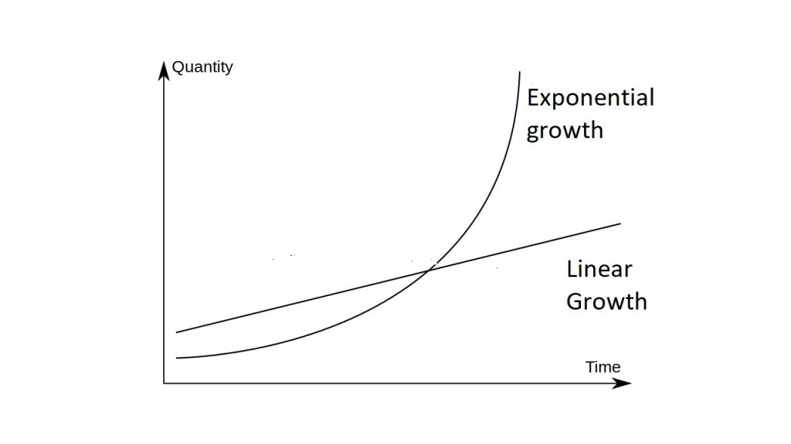

Growth
On the SAT there are two different forms of growth: linear and exponential.
Linear Growth:
Linear growth is represented the a basic function y = mx + b.
m = slope of the graph / rate of change
b = y intercept (where the function meets the y intercept)
To calculate the value of y at a specific time t, plug in t in for x and evaluate the expression
Example: y = 5x + 3
In this case, the value of y at time 10 is 5 * (10) + 3 = 53
In terms of time, at time = 0 (x = 0), y will be equal to the initial value b.
In the previous example, the initial value of the function (t = 0) would be y = 3
Exponential Growth:
Linear growth is represented the function y = arx.
r = Rate of change
r is equal to 1 + the rate of change -> if rate of change is 11%, r = 1.11
The case is the same or negative growth (decay) -> if rate of change is -7%, r = .93
a = y intercept
To calculate the value of y at a specific time, plug in for t
Example: y = 8(1.06)t
If this function were to represent a bank acconut, for example, the initial value is $8, and has a 6% growth every year.
At the end of 3 years (t = 3), the value of the bank account would be 8(1.06)3 = $9.52
